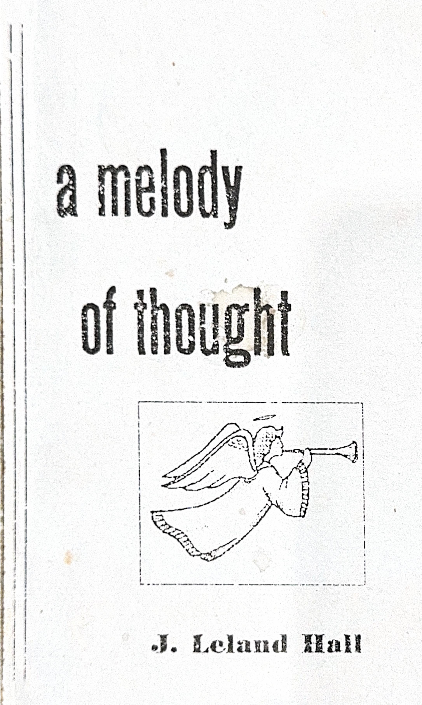
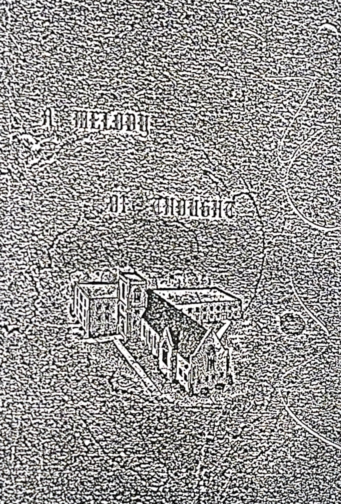
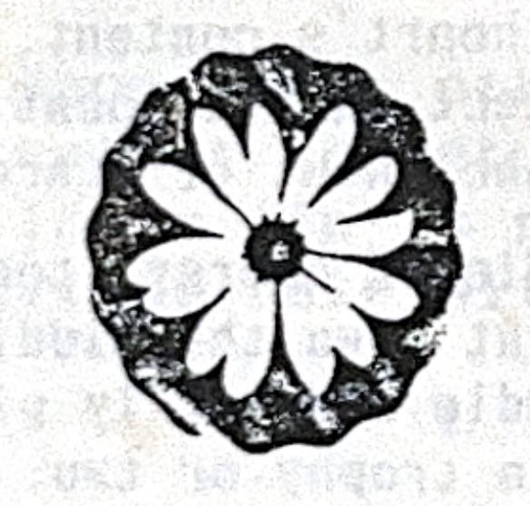
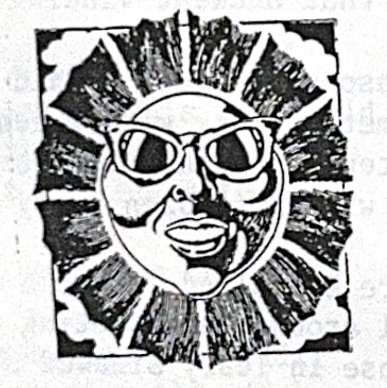

Read
 
A Melody of Thought
J. Leland Hall · 1942–1995
Poems
About
All Themes
Aging
Children
Christ
Church
Devotion
Encouragement
Eternity
Father
Gratitude
Grief
Heaven
Hope
Hymn
Marriage
Memory
Ministry
Missions
Mother
Nature
Prayer
Presence
Rest
Salvation
Scripture
Seasons
Seeking
Service
Spouse
Struggle
Surrender
Wisdom
Writing
All Years
1938
1942
1943
1944
1949
1950
1951
1952
1953
1954
1956
1957
1958
1959
1960
1961
1962
1963
1964
1965
1966
1967
1968
1969
1970
1971
1972
1973
1976
1980
1981
1982
1984
1985
1986
1987
1988
1989
1990
1991
1992
1995
✦ Discover a Poem
Showing
197
of 197 poems
×

← Previous
Next →
×